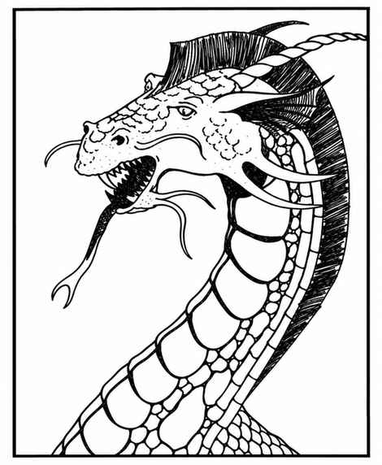

铂金龙 · Platinum Dragon
 |
|
善龙之王巴哈姆特居住在东风之后一座坚固的宏伟宫殿中。（除了巴哈姆特及其宫廷，无人确知此地是在气元素位面、七重天堂或三重乐园之间的某个位面，还是其他所在。）约有四分之一的时间，他会化作人类或任意形态在世间行走；巴哈姆特可以自由变形，也能进行星界或以太旅行。
巴哈姆特可用双爪与咬击攻击，也可选择以下三种吐息之一：长 8 寸、底部直径 3 寸的寒冷锥；使其中生物通过对抗龙息豁免检定，否则失去实体并变为气态、持续整整 12 回合的蒸汽云；或可使至多 150 点生命值目标解体的音波振动。每种吐息每天可使用两次。由于力量源自巴哈姆特，所有抵抗其吐息的豁免检定承受 −3 惩罚。
巴哈姆特能使用一至七环法术：每天至多施展 21 个法术，其中每个魔法师法术环阶两个、牧师法术环阶一个。他拥有记载所有这些环阶已知魔法师法术的法术书。
七条能力出众、忠诚无比的巨型古金龙担任巴哈姆特的护卫、同伴与顾问；他很少（10%）离开它们。有位学者曾讲述，他遇见一位老隐士，身边有七只金丝雀欢快飞舞；直到一群食人魔与巨魔经过、随即遭殃，学者才意识到隐士的真实身份。
上一节：绿龙 · Green Dragon（Draco Chlorinous Nauseous Respiratorus）
下一节：红龙 · Red Dragon（Draco Conflagratio Horriblis）